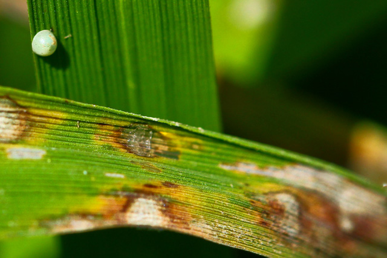

Leaf blast (leaf and collar)
What it does
Blast is caused by the fungus Magnaporthe oryzae. It can affect all above ground parts of a rice plant: leaf, collar, node, neck, parts of panicle, and sometimes leaf sheath.
Why and where it occurs
Blast can occur wherever blast spores are present.
It occurs in areas with low soil moisture, frequent and prolonged periods of rain shower, and cool temperature in the daytime. In upland rice, large day-night temperature differences that cause dew formation on leaves and overall cooler temperatures favor the development of the disease.
Rice can have blast in all growth stages. However, leaf blast incidence tends to lessen as plants mature and develop adult plant resistance to the disease.
How to identify
Check the leaf and collar for lesions:
- Initial symptoms appear as white to gray-green lesions or spots, with dark green borders.
- Older lesions on the leaves are elliptical or spindle-shaped and whitish to gray centers with red to brownish or necrotic border.
Check for other symptoms:
- Some resemble diamond shape, wide in the center and pointed toward either ends.
- Lesions can enlarge and coalesce, growing together, to kill the entire leaves.


Blast lesions can commonly be confused with Brown Spot lesions.
Leaf blast lesions are usually elongated and pointed at each end, while brown spot lesions tend to be more round, brown in color and have a yellow halo surrounding the lesion.
Why is it important
Rice blast is one of the most destructive diseases of rice. A leaf blast infection can kill seedlings or plants up to the tillering stage. At later growth stages, a severe leaf blast infection reduces leaf area for grain fill, reducing grain yield.
Leaf blast can kill rice plants at seedling stage and cause yield losses in cases of severe infection.
How to manage
The primary control option for blast is to plant resistant varieties. Contact your local agriculture office for up-to-date lists of varieties available.
Other crop management measures can also be done, such as:
- Adjust planting time. Sow seeds early, when possible, after the onset of the rainy season.
- Split nitrogen fertilizer application in two or more treatments. Excessive use of fertilizer can increase blast intensity.
- Flood the field as often as possible.
Silicon fertilizers (e.g., calcium silicate) can be applied to soils that are silicon deficient to reduce blast. However, because of its high cost, silicon should be applied efficiently. Cheap sources of silicon, such as straws of rice genotypes with high silicon content, can be an alternative. Care should be taken to ensure that the straw is free from blast as the fungus can survive on rice straw and the use of infected straw as a silicon source can spread the disease further.
Systemic fungicides like triazoles and strobilurins can be used judiciously for control to control blast. A fungicide application at heading can be effective in controlling the disease.
-
Content expert: Jo Catindig (email: j.catindig@irri.org) and Bryce Blackman (email: b.blackman@irri.orgp).
Disclaimer: All information are taken from http://www.knowledgebank.irri.org/